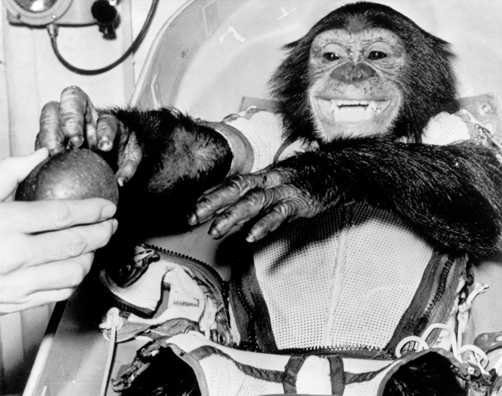

Before the Space Race, both the Americans and Soviets expressed interest in planning to develop satellites to launch into space. Regardless, the Space Race was kicked off on 10/04/1957 when the Soviets’ launched the Sputnik-1 satellite into orbit. The next month (11/03/1957), they followed up by launching Sputnik-2, a probe carrying the first living organism into space, Laika the dog. In response to this, the United States sent their first satellite, Explorer I, into orbit the next year (01/31/1958). About nine months later (10/01/1958), president Dwight David Eisenhower ordained that the National Advisory Committee on Aeronautics (NACA) would be dissolved and replaced by the National Aeronautics and Space Administration (NASA) as the country’s center organization for aerospace research and development.
The two sides would continue to trade blows by each launching several more probes over the next year: The US’ SCORE communications satellite (12/18/1958), the USSR’s Luna 1 “cosmic rocket” that was (incidentally) able to escape the orbit of the moon and Earth (01/02/1959), the US’ Explorer 6 weather satellite (08/02/1959), the USSR’s Luna 2 rocket that was able to reach the Moon (09/12/1959), the USSR’s Luna 3 rocket that successfully orbited around the Moon (10/04/1959), and the USSR’s Sputnik 5 satellite shepherding two dogs and many plants to and from space (08/19/1960). After these satellite launches, both sides started to pivot towards testing human spaceflights.
As part of the US’ Mercury Program on 01/31/1961, Ham the Chimpanzee became the first hominid to successfully enter space and land back on Earth. More than a year later in the USSR (04/12/1961), Yuri Gagarin made history by becoming the first humanoid to fly into space aboard the Vostok 1 craft. Inthe Cinco of Mayo of 1961, the US sent their first person on a sub-orbital flight, Alan Sheaprd on the Freedom 7/Mercury-Redstone 3. The Soviets would continuously make more significant advances in sending both probes and people into space. Meanwhile, the Mercury Program in America was replaced by and renamed to the Gemini Program, which was more intended to test out mechanics and technology.
On 05/21/1965, American president, John Fitzgerald Kennedy, would give his famous speech at Rice University explaining that they are going to the Moon—not because it is easy, but because it is hard—by the end of the decade, signaling that NASA had to ramp up their efforts. Accompanied by a hefty budget increase, the Gemini Program was once again replaced by and renamed to the Apollo Program, which had the goal of finally putting boots on the Moon for real this time. After numerous trials, breakthroughs, and disasters on both sides, the Space Race officially ended on 07/20/1969 when the US’ Apollo 11 rocket propelled Neil Armstrong, Buzz Aldrin, and Michael Collins (kind of) into space and onto the Moon.
The Space Race might have ended then, but humanity’s endeavors into space had only begun. Most notably, the USSR and US each developed their own space stations, the Salyut I (04/19/1971) and Skylab (05/14/1973) respectively. On 07/17/1975, American and Soviet astronauts met, shook hands, and worked together in the Apollo-Soyuz docking mission. On Earth, the US and USSR were still waging the Cold War (it would end in 1989), but up in space, it seems that they managed to reconcile with each other in some way.
